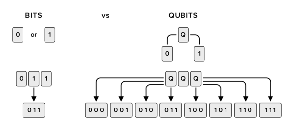

¿Qué es la computación cuántica?
La rama de la informática en cuestión se fundamenta en los principios de la superposición de la materia y el entrelazamiento cuántico para la creación de un modelo computacional no convencional. Teóricamente, este modelo tendría la capacidad de almacenar una cantidad significativamente mayor de estados por unidad de información y ejecutar algoritmos numéricos mucho más eficientes, tales como el algoritmo de Shor o el temple cuántico. Este nuevo tipo de supercomputadoras hace uso del conocimiento en mecánica cuántica, área de la física dedicada al estudio de partículas atómicas y subatómicas, para superar las restricciones de la informática clásica. Aunque la computación cuántica enfrenta desafíos prácticos relacionados con la escalabilidad y la decoherencia, ofrece la capacidad de realizar múltiples operaciones simultáneas y eliminar el efecto túnel que afecta a la programación actual en la escala nanométrica.
¿Qué es un qubit?
Un qubit, la unidad básica de información en la informática cuántica, difiere del bit tradicional utilizado en la computación clásica. Su característica principal radica en su capacidad para sostener una superposición coherente de estados, permitiendo que pueda representar tanto un uno como un cero simultáneamente, en contraste con el bit convencional que solo puede adoptar uno de esos dos valores en un momento dado.
Esta particularidad del qubit implica que puede existir en una combinación de ambos estados, con diferentes proporciones. Esta multiplicidad de estados posibilita que incluso un ordenador cuántico relativamente pequeño, compuesto por apenas 30 qubits, pueda ejecutar operaciones en coma flotante a una velocidad sorprendente, superando ampliamente el rendimiento de dispositivos como la videoconsola PlayStation más potente disponible en el mercado
DIFERENCIAS ENTRE LA COMPUTACIÓN CUÁNTICA Y LA TRADICIONAL
La computación cuántica y la tradicional se distinguen por varias características fundamentales, destacando el uso del qubit en lugar del bit. A continuación, se enumeran tres de las diferencias más relevantes:
- Lenguaje de programación: En la computación cuántica, no existe un lenguaje de programación específico; en su lugar, se desarrollan algoritmos altamente especializados para su implementación. Por el contrario, la informática tradicional dispone de lenguajes estándar bien establecidos, como Java, SQL o Python, entre otros.
- Funcionalidad: Los ordenadores cuánticos no son herramientas de uso cotidiano o popular, como las computadoras personales (PC). Su complejidad los hace adecuados únicamente para entornos corporativos, científicos y tecnológicos especializados.
- Arquitectura: La estructura de un ordenador cuántico es más simple en comparación con la de uno convencional, careciendo de memoria o procesador. Estos sistemas se basan en un conjunto de qubits como su unidad básica de funcionamiento.
¿Qué es la criptografía cuántica?
La criptografía cuántica, también denominada cifrado cuántico, se refiere a diversos métodos de ciberseguridad diseñados para encriptar y transmitir datos de manera segura, basándose en los principios naturales e invariables de la mecánica cuántica. Aunque aún se encuentra en sus primeras etapas de desarrollo, el cifrado cuántico posee el potencial de ser considerablemente más seguro que los algoritmos criptográficos anteriores, e incluso se considera teóricamente invulnerable a intrusiones.
La criptografía cuántica, también denominada cifrado cuántico, se refiere a diversos métodos de ciberseguridad diseñados para encriptar y transmitir datos de manera segura, basándose en los principios naturales e invariables de la mecánica cuántica. Aunque aún se encuentra en sus primeras etapas de desarrollo, el cifrado cuántico posee el potencial de ser considerablemente más seguro que los algoritmos criptográficos anteriores, e incluso se considera teóricamente invulnerable a intrusiones. En contraste con la criptografía tradicional, que se fundamenta en conceptos matemáticos, la criptografía cuántica se apoya en las leyes de la física. Específicamente, se basa en los siguientes principios únicos de la mecánica cuántica:
- Incertidumbre inherente de las partículas: A nivel cuántico, las partículas pueden coexistir en múltiples ubicaciones o estados simultáneamente, y su estado cuántico exacto es impredecible.
- Medición aleatoria de los fotones en posiciones binarias: Los fotones, las partículas elementales de la luz, pueden ser configurados para poseer polaridades específicas, denominadas espines, que pueden representar una contraparte binaria para los sistemas computacionales clásicos, donde se utilizan unos y ceros.
- Alteración inevitable al medir un sistema cuántico: Según las leyes de la física cuántica, el simple acto de medir o observar un sistema cuántico siempre produce un efecto medible en dicho sistema. Limitaciones en la clonación de partículas: Aunque es posible clonar parcialmente las propiedades de algunas partículas, se cree que es imposible lograr una clonación total al 100%.
Tipos de criptografía cuántica
- Distribución de claves cuánticas (QKD):
Desarrollada originalmente en 1984 por Charles H. Bennett y Gilles Brassard del Centro de Investigación Thomas J. Watson de IBM, la distribución de claves cuánticas (QKD) es el enfoque más común en criptografía cuántica. Los sistemas QKD no cifran directamente los datos, sino que facilitan el intercambio seguro de claves entre dos partes. Esto se logra mediante la creación conjunta de una clave privada compartida que puede utilizarse para métodos tradicionales de cifrado simétrico.
En los sistemas QKD, se envían partículas de luz fotónica individuales a través de un cable de fibra óptica. Estos fotones representan bits individuales de datos (qubits), con polarizaciones específicas modificadas por filtros polarizadores en el emisor. El receptor utiliza divisores de haz para leer las polarizaciones de los fotones recibidos. Las posiciones de los fotones enviados y recibidos se comparan, y las coincidencias forman la clave compartida. - Lanzamiento cuántico de monedas:
El lanzamiento cuántico de monedas es una técnica primitiva en criptografía cuántica que permite a dos partes acordar parámetros sin confiar plenamente entre sí. Por ejemplo, si Alice y Bob necesitan tomar una decisión al azar pero solo Bob tiene acceso a la moneda, el lanzamiento cuántico de monedas ofrece una solución. Bob envía fotones polarizados a Alice, quien intenta adivinar las polarizaciones correctas para cada fotón. Las lecturas de Alice y Bob se comparan para verificar la autenticidad. - Otros tipos de criptografía cuántica:
Además de QKD y el lanzamiento cuántico de monedas, los investigadores exploran otras formas de criptografía cuántica, como el cifrado directo, las firmas digitales y el entrelazamiento cuántico. Algunos ejemplos adicionales incluyen: - Criptografía cuántica basada en la posición.
- Criptografía cuántica independiente del dispositivo.
- Protocolo Kek.
- Protocolo Y-00.
Cómo la computación cuántica puede afectar la ciberseguridad
Esta nueva tecnología no solo acelera la computación convencional, sino que también proporciona una ventaja exponencial en ciertas áreas y para ciertos tipos de problemas, como la factorización de números muy grandes, la investigación médica, la inteligencia artificial y la predicción del tiempo, entre otros. Sin embargo, en la práctica, aún enfrenta desafíos significativos de escalabilidad, especialmente en la ejecución de un gran número de operaciones, y de decoherencia, que se refiere a efectos cuánticos no observables que afectan el desarrollo de estas tecnologías.
Cada ventaja de la computación cuántica conlleva amenazas significativas para la seguridad de los datos
y la privacidad. Aunque las computadoras cuánticas actuales no tienen la capacidad de descifrar la
mayoría de los métodos de encriptación actuales, es crucial anticiparse a las amenazas y desarrollar
soluciones desde ahora mismo. Esperar a que las computadoras cuánticas comiencen a descifrar nuestros
sistemas de cifrado sería demasiado tarde.
Es necesario no solo implementar medidas de seguridad cuánticamente
seguras, sino también capacitar a los profesionales para comprender y mitigar los riesgos de seguridad
asociados con esta nueva tecnología.

Hasta qué punto podrían verse comprometidos los mecanismos actuales de cifrado y qué implicaciones tendría esto:
Aunque las computadoras cuánticas actuales no poseen la potencia suficiente para descifrar claves de cifrado, es una certeza que las futuras versiones podrán hacerlo. Un ejemplo notorio es el algoritmo de Shor, desarrollado por Peter Shor, que puede factorizar grandes números mucho más rápido que una computadora clásica. Desde su creación, los científicos han estado trabajando en mejorar este algoritmo para abordar números cada vez mayores. Para ponerlo en perspectiva, se estima que una computadora cuántica necesitaría alrededor de 70 millones de qubits para romper el cifrado RSA actualmente utilizado para proteger datos confidenciales en Internet. Considerando que la computadora cuántica más grande actualmente posee 53 qubits, queda claro que aún falta mucho para alcanzar ese nivel de potencia de procesamiento.
La información generada hoy en día necesitará protección cuántica, ya que si se roban datos cifrados hoy, los atacantes solo tendrán que esperar a que las computadoras cuánticas puedan romper el cifrado.
¿Cómo deberían repensar la seguridad los usuarios y las organizaciones?
Si bien la seguridad criptográfica es un aspecto fundamental en la era de la computación cuántica, existen avances significativos en el desarrollo de métodos de cifrado "poscuánticos". El Instituto Nacional de Estándares y Tecnología de los Estados Unidos (NIST) ya está evaluando 69 nuevos métodos potenciales de "criptografía poscuántica" (PQC). Además, se están desarrollando sistemas como Quantum Key Distribution (QKD), que utiliza propiedades físicas para transferir de forma segura una "clave cuántica" entre dos puntos finales, algo que antes solo era posible a través de cables de fibra óptica. Las organizaciones pueden elegir el nivel de preparación cuántica que deseen y agregar criptografía QKD o PQC según sea necesario para la seguridad de sus comunicaciones. Es crucial que las organizaciones tomen conciencia sobre cómo están cifrando su información y repiensen sus esquemas de seguridad. La criptografía es solo una parte de un panorama más amplio de seguridad. Se debe considerar la seguridad en su totalidad, incluyendo la concientización de los usuarios sobre las prácticas de seguridad, las vulnerabilidades del software y el control de acceso a los datos internos.
Referencias
- Cómo la computación cuántica puede afectar la ciberseguridad. (2023, 28 junio).
- Iberdrola. (2021, 22 abril). QUÉ ES LA COMPUTACIÓN CUÁNTICA. Iberdrola.
- Malenkovich, S. (2019, 22 noviembre). El fin de la seguridad con las computadoras cuánticas. Blog Oficial de Kaspersky.
- ¿Qué es la criptografía cuántica? | IBM. (s. f.).